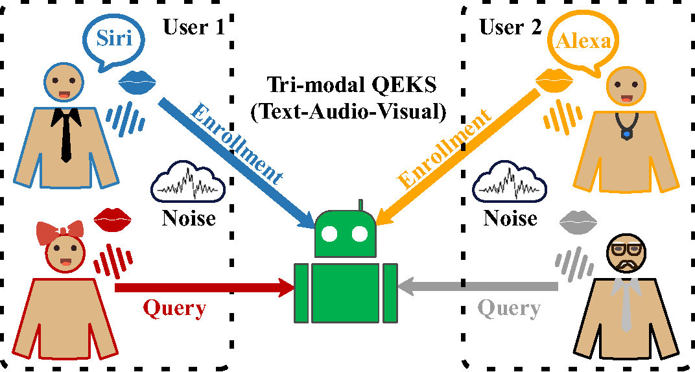

Keyword spotting (KWS) aims to detect a target word or phrase from continuous speech and is widely used in voice-controlled systems and speech-driven interfaces. Traditional KWS systems rely solely on the audio modality, which makes them vulnerable to far-field attenuation, background noise, reverberation, and multi-speaker overlap in realistic environments.
Recent research has shown that incorporating visual information—such as lip movements—can markedly improve robustness by reducing false alarms under noisy conditions. However, most existing audio-visual KWS systems are designed for a fixed and narrow set of predefined keywords, limiting their flexibility in real-world applications.
Query-by-Example Keyword Spotting (QEKS) addresses this limitation by enabling open-vocabulary detection: users provide an example of a keyword (e.g., a spoken example), and the system searches for matching occurrences. Nevertheless, many QEKS systems still rely primarily on audio input, making them fragile in challenging acoustic scenarios.
The MISP 2026 Challenge introduces an audio–visual–text tri-modal QEKS paradigm, combining the open-vocabulary flexibility of QEKS with the robustness offered by visual cues and auxiliary textual information, thereby enabling more general and noise-resilient keyword spotting systems.
In AVT-QEKS, the enrollment information associated with a keyword consists of an exemplar’s spoken audio \(X^{\mathrm{E}}\), visual observations (e.g., lip movements or facial appearance) \(V^{\mathrm{E}}\), and auxiliary textual information \(S^{\mathrm{E}}\). During inference, the query includes the user’s speech signal \(X^{\mathrm{Q}}\) and corresponding visual cues \(V^{\mathrm{Q}}\).

Figure 1: A schematic overview of audio-visual-text query-by-example keyword spotting (AVT-QEKS).
The objective is to estimate the likelihood \(p(X^{\mathrm{Q}}, V^{\mathrm{Q}} \mid X^{\mathrm{E}}, V^{\mathrm{E}}, S^{\mathrm{E}})\) that the query contains the same keyword as the enrollment exemplar, and to make a binary decision via hypothesis testing:
\[ \hat{\mathcal{H}}= \begin{cases} \mathcal{H}_1, & \text{if } p(X^{\rm Q}, V^{\rm Q}\mid X^{\rm E}, V^{\rm E}, S^{\rm E}) \ge \tau,\\ \mathcal{H}_0, & \text{otherwise}, \end{cases} \]
where \(\mathcal{H}_1\) denotes the hypothesis that the enrolled keyword is present in the query and \(\mathcal{H}_0\) denotes the alternative hypothesis. The threshold \(\tau\) controls the operating point.
By sweeping the decision threshold \(\tau\), a receiver operating characteristic (ROC) curve is obtained, which characterizes the trade-off between the true positive rate (TPR) and the false positive rate (FPR):
\[ \mathrm{TPR}(\tau), \mathrm{FPR}(\tau) = \frac{\mathrm{TP}(\tau)}{\mathrm{TP}(\tau)+\mathrm{FN}(\tau)}, \frac{\mathrm{FP}(\tau)}{\mathrm{FP}(\tau)+\mathrm{TN}(\tau)}. \]
The Area Under the ROC Curve (AUC) is adopted as the primary evaluation metric for this challenge and computed as:
\[ \mathrm{AUC} = \int_{0}^{1} \mathrm{TPR}(\mathrm{FPR}) \, d\,\mathrm{FPR}. \]
AUC measures the overall separability between positive (\(\mathcal{H}_1\)) and negative (\(\mathcal{H}_0\)) trials across all possible operating points. Higher AUC indicates better matching performance.